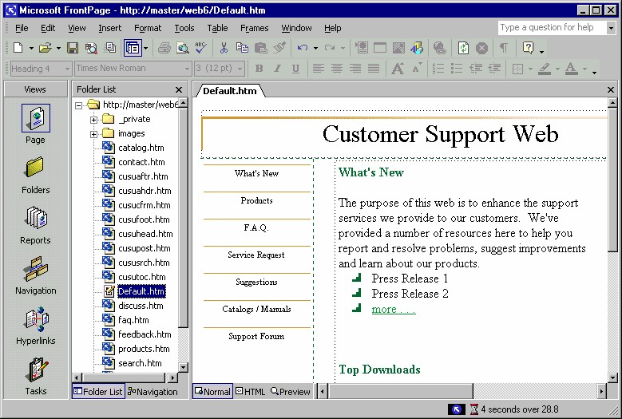
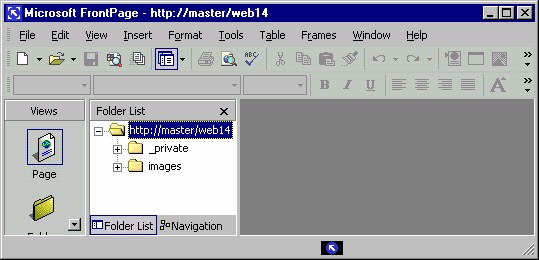
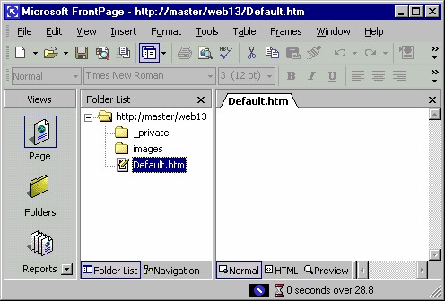
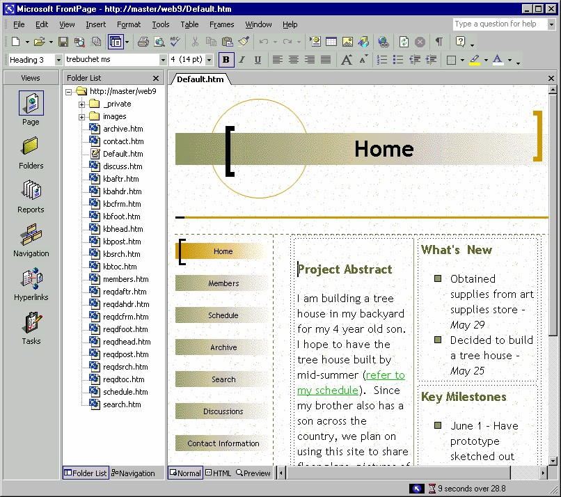

4 Ringkasan Situs Web
Sampai di sini kita telah merasakan kecanggihan dan kemudahan pemakaian tiga
macam wizard yang disediakan FrontPage XP.
Tanpa harus memformat satu-persatu, tanpa harus memilih dan memasang gambargambar,
tanpa perlu membuat link, bahkan tanpa perlu penulisan script ataupun tag
HTML.
Semuanya tinggal pilih lalu edit teks-nya, mudah sekali. Hasilnya? Benar-benar
mengesankan, canggih dan indah.
Hanya itu? Tidak, masih ada beberapa web site lagi yang langkah-langkahnya
sengaja tidak kita ulas di sini, silahkan mencoba sendiri.
Berikut ini penulis sampaikan ringkasan masing-masing web site tersebut.
4.1 Customer Support Web
Customer Support Web berguna untuk membuat situs web layanan konsumen.
Selengkapnya memiliki delapan halaman, yaitu Wellcome, What’s New, FAQ
(Frequently Asked Question), Bugs, Suggestion, Download dan Discussion.

Gambar 3.38 Susunan Customer Support Web
Berikut ini keterangan singkat masing-masing halaman:
• Wellcome
Menampilkan indormasi singkat tentang layanan yang disediakan oleh
perusahaan Anda. Tentu saja tersedia tombol-tombol navigasi dan daftar
halaman lain yang bisa dibuka.
• What’s New
Menyampaikan daftar perubahan atau perbaikan fasilitas layanan yang ada
pada versi terakhir. Cara memperbarui, jadwal produk baru, dan problem
serta pemecahannya.
• FAQ (Frequently Asked Question)
Menampilkan daftar pasangan pertanyaan-jawaban atas produk atau layanan
yang diberikan perusahaan.
• Bugs
Menyampaikan kekurangan atau kelemahan produk yang dijumpai terhadap
produk denga versi terbaru. Pemakai bisa menyampaikan ke perusahaan kita
mengenai bug atau kekurangan atas produk perusahaan kita, dengan cara
klik tombol Submit yangtelah disediakan.
• Suggestion
Adalah semacam kotak saran yang menyediakan sarana umpan balik
terhadap produk kita.
• Download
Menyediakan link melalui jalur FTP atau HTTP sehingga pengunjung situs
perusahaan kita bisa melakukan download.
• Discussion
Menyediakan teks link yang menghubungkan antar host pengunjung
sehingga bisa membentuk jaringan diskusi tentang produk perusahaan.
4.2 Empty Web
Membuat sebuah Web site baru yang tidak berisi halaman-halaman Web atau
gambar-gambar, hanya struktur direktori saja.

Gambar 3.39 Empty web
Direktori tersebut ada dua yaitu _Private, untuk penampung file -file sisipan dan
merupakan file hidden.
Direktori yang satunya adalah images, seperti namanya, direktori ini bertugas
menyimpan seluruh gambar yang digunakan oleh halaman- halaman di seluruh web.
4.3 One Page
Template One Page berguna untuk membuat sebuah Web site baru berisi sebuah
halaman home page (Default.htm) dengann struktur direktori minimal.

Gambar 3.40 One Page Site
Komposisi minimal tersebut terdiri dari sebuah halaman Default.htm yang masinh
kosong dan dua direktori yaitu _Private, untuk penampung file -file sisipan dan
merupakan file hidden.
Direktori yang satunya adalah images, seperti namanya, direktori ini bertugas
menyimpan seluruh gambar yang digunakan oleh halaman- halaman di seluruh web.
4.4 Project Web
Project Web untuk membangun sebuah Web site berorientasi proyek dengan sebuah
header dan footer yang menghubungkan (link) ke berbagai dokumen: Home,
Members, Schedule, Status, Archive, Search, Discussion.

Gambar 3.41 Project Web
Berikut ini keterangan singkat beberapa halaman yang penting:
• Home. Menampilkan indormasi singkat tentang layanan yang disediakan
oleh perusahaan Anda. Tentu saja tersedia tombol-tombol navigasi dan
daftar halaman lain yang bisa dibuka.
• Members. Adalah halaman yang menyampaikan daftar keanggotaan
kelompok.
• Schedule. Menampilkan daftar acara diskusi, yang mencakup toik, jadwal,
pelaksana dan sebagainya.
• Archive. Menyediakan teks link yang menghubungkan antar host
pengunjung sehingga bisa membentuk jaringan diskusi tentang produk
perusahaan kita.
• Search. Adalah halaman yang berfungsi sebagai sarana pencarian teks yang
ada pada situs
Copyright © Herlan Lesmana
Created with the Freeware Edition of HelpNDoc: Easily create Help documents